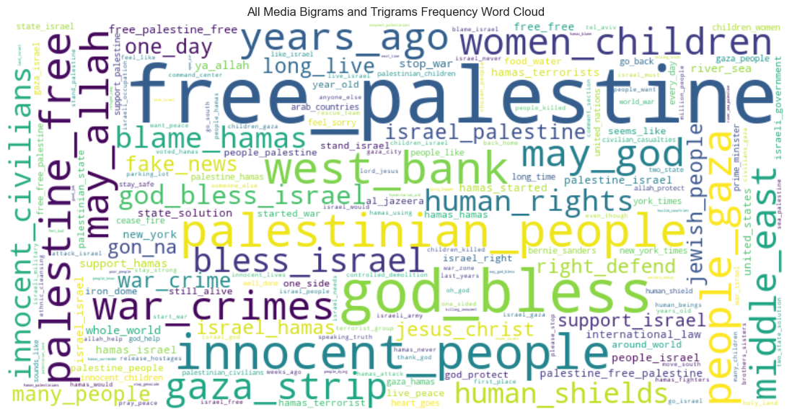
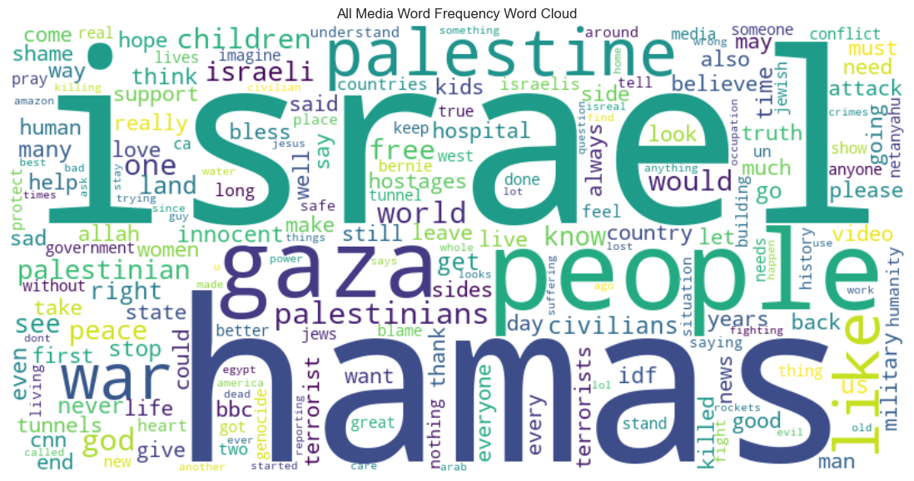

P01 / AUDIENCE COMMENT ANALYSIS
Reading audience patterns
across seven news sources.
YouTube comments on Israel–Palestine news coverage: a text-analysis project built from retained captures across seven sources.
QUESTION How did polarity and selected wording differ across the sampled discussion?
Videos published 7 Oct–2 Dec 2023 · Python / pandas / TextBlob
EXPLORE Word frequency → recurring expressions → polarity → source comparisons.
My contribution: data collection, cleaning, Python analysis and visualisation. Group research report.
01 / DISCUSSION LANDSCAPE
ORIGINAL EXPLORATORY ANALYSIS · LEGACY PROJECT SCOPEThe language extended beyond names
to rights, conflict and expressions of support.

READ THE EXPRESSIONS
- Places and people
- Gaza Strip · Palestinian people
- Rights and conflict
- human rights · war crimes
- Blessings and support language
- God bless Israel · free Palestine
Current descriptive annotations of labels visible in the original output; not coded audience positions.
This exploration made the language of the discussion visible and provided context for more structured phrase and polarity analysis.
Original COM5507 report, all-media n-gram visual. Legacy scope differs from the rebuilt 27,482-record sample. Exact phrase counts are not recovered; frequency does not establish endorsement or importance.
See the original word-frequency landscape

02 / REBUILT SENTIMENT PROFILE
27,482 ENGLISH RECORDSMore than half fell within
the neutral polarity band.
Under the defined TextBlob thresholds, Neutral was the largest category in the English-screened sample.
Interpretation → TextBlob describes wording polarity; it does not measure objectivity, approval or political stance.
n = 27,482 · Negative < −0.1; Neutral −0.1 to +0.1 inclusive; Positive > +0.1. Shares rounded independently.
COMPARISON / SEVEN SOURCE SAMPLES
SAME ENGLISH SAMPLEA common largest category.
Different polarity mixes.
Neutral was the largest category in all seven samples. Its share ranged from 45.07% to 56.71%; the proportions below show each captured sample, not a representative source audience.
Select a source to inspect its exact counts. Sources are ordered alphabetically.
Decision → Compare source samples in context; different videos and capture coverage prevent a causal source ranking.
03 / CAPTURED DISCUSSION VOLUME
33,851 SCOPED RECORDSMost captured records came
from two source samples.
The pooled picture reflects uneven capture volume, so comparisons need to account for the videos contributing the records.
Scoped population, before English screening. Captured volume is not total audience size.
VALIDATION / REVISITING THE ORIGINAL ANALYSIS
Keep the descriptive results.
Narrow what they can claim.
<1 pp overall movement under equal-video weighting.
7.27% coverage for the selected phrase dictionary.
Inspect weighting sensitivity
Does equal-video weighting change the picture?
<1 pp overall movement27,482 English records / 123 videos · Equal-video = mean of within-video category shares. Change = equal-video minus record-weighted, in percentage points.
Judgment → Overall ordering stays the same, but source/category movement reaches 3.81 pp (NBC Positive: 29.60% → 33.40%). The pooled result is more stable than individual source comparisons.
Inspect the weighting trade-off
Equal-video weighting gives small and large videos equal influence; 15 eligible videos have fewer than 10 English records. It is a sensitivity check, not automatically a better estimate. Full sample and sensitivity tables ↗
Why the phrase output is called “Selected Phrase Indicators”
1,997 of 27,482 records matched at least one selected category; 25,485 (92.73%) matched none. This supports a limited wording indicator, not exhaustive topic modelling. Records may match multiple categories; matching cannot distinguish endorsement from quotation or rejection.
The rebuild repaired record-boundary and token-matching problems, then tested the inherited dictionary rather than expanding it to force coverage.
SO WHAT / ANALYTICAL DECISION
Use text patterns to guide
the next audience-research question.
The original exploration shows what language appeared; the rebuild establishes a scoped comparison. Together they support targeted contextual review without turning text scores into claims about audience beliefs.
WHAT THIS DEMONSTRATES
Data Quality · Python Analysis · Text Analytics · Comparative Analysis · Validation
METHODS / PROVENANCE / LIMITATIONS
Data preparation and measurement rules
40,187 retained captures became 38,204 canonical video–text pairs, then 33,851 records after the video-date filter. Deduplication uses video ID plus NFC/whitespace-normalised text; case, punctuation and emojis are preserved. Without comment IDs or timestamps, identical text within a video remains an ambiguous duplicate candidate.
The English gate requires at least 3 word tokens and language probability ≥0.9 (seed 0). It retained 27,482 records. The date is the video publication date, not the comment date. TextBlob threshold comparisons are rounded to 12 decimals. Sarcasm, multilingual text and context remain measurement limitations.
Exact methods and reproduction boundaries ↗ · Source counts CSV ↗ · Weighting CSV ↗
Contribution and what this demonstrates
Originally completed as a CityU COM5507 group research project; all data-related work presented in this portfolio was completed by me. The report was jointly authored. The 2026 rebuild used Codex assistance and added explicit population definitions, sample-structure checks and validation.
The analytical output is a traceable, bounded audience-research baseline. No intervention, commercial uplift or representative population estimate is claimed. Private comment text is not distributed; full numerical reproduction requires the private source snapshots. Provenance ↗